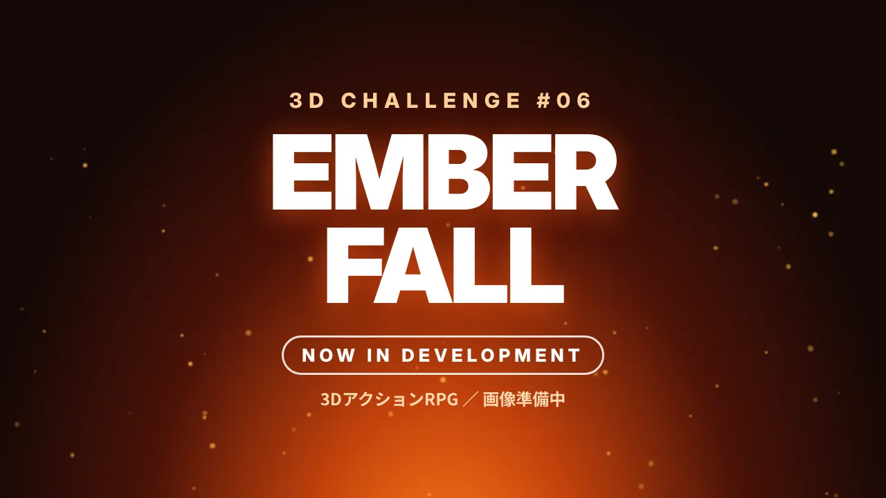

- 長屋晴太 Portfolio
- Other Works
- EMBERFALL
▶ PLAYABLE

GAME WORKS ／ 長屋晴太の作品
EMBERFALL
3DアクションRPG
3Dゲーム制作10本制作チャレンジ 6作目「EMBERFALL」
TECH POINT（技術のポイント）
雑魚とボスでクラスを分け、IDamageable インターフェースでつないだ。ボスのAIは状態ごとに処理を分け、攻撃の進み具合を Animator の再生位置ではなく経過時間で計算することで、連続攻撃が一瞬で終わる不具合を解決した。
- DATE（制作時期）
- 2026/10 ~ 11
- TEAM（人数）
- 個人制作
- ROLE（担当）
- 企画・プログラム
- TOOLS（使った技術）
- Unity ／ C# ／ Github
CODEコードの抜粋
雑魚とボスを、1つのインターフェースで扱う
プレイヤーの武器は、相手が雑魚かボスかを区別せず、IDamageable だけを通してダメージを与えます。新しい種類の敵や壊せるオブジェクトを足すときは、このインターフェースを実装するだけで済みます。1回の攻撃で同じ相手に何度も当たらないように HashSet で記録し、インターフェース型では Unity の破棄済みの判定が働かない点も確認しています。
IDamageable.cs ／ PlayerWeaponHitbox.cs（抜粋）
// IDamageable.cs：ダメージを受けられるものの共通インターフェース
public interface IDamageable
{
/// <summary>すでに死亡（破壊）しているか。</summary>
bool IsDead { get; }
/// <summary>ダメージを受ける。</summary>
void TakeDamage(int damage);
}
public class EnemyHealth : MonoBehaviour, IDamageable { /* …（省略） */ }
public class BossHealth : MonoBehaviour, IDamageable { /* …（省略） */ }
// PlayerWeaponHitbox.cs：プレイヤーの武器の当たり判定
// 1回の攻撃で、すでにダメージを与えた相手を記録する
private readonly HashSet<IDamageable> hitTargets =
new HashSet<IDamageable>();
private void OnTriggerStay(Collider other)
{
// …（攻撃中か・自分自身か の確認は省略）
// 敵の子オブジェクトに接触しても、親にある
// ダメージを受けられるコンポーネント（雑魚・ボスなど）を取得する
IDamageable target =
other.GetComponentInParent<IDamageable>();
if (!IsValidTarget(target))
{
return;
}
// 同じ攻撃で同じ相手に複数回ダメージを与えない
if (!hitTargets.Add(target))
{
return;
}
// …（省略）
// 実際のダメージ計算はPlayerCombatに任せる
playerCombat.ApplyDamage(target);
}
/// <summary>
/// ダメージを与えられる相手か確認する。
/// インターフェース型の変数では Unity の「破棄済みオブジェクトは null と等しい」
/// という判定が働かないため、MonoBehaviour として破棄済みかどうかも確認する。
/// </summary>
private static bool IsValidTarget(IDamageable target)
{
if (target == null)
{
return false;
}
if (target is Object unityObject && unityObject == null)
{
return false;
}
return !target.IsDead;
}
作った人：長屋晴太（はる）
ゲームプログラマー志望（2028年卒）。Unity・C#・C++ でゲームを作っています。IGCCゲームジャム グランプリ「Falien」、東京ゲームショウ2026出展「ししとう」など、36作品をゲームのように遊べるポートフォリオにまとめています。
ポートフォリオを見る ▶